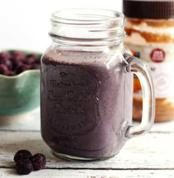

7 Healthy Breakfast Smoothies You Need to Make This Week!
Admit it: Oversleeping happens. But having a time-crunched, frazzled morning doesn't mean you should skimp out on breakfast. Luckily these smoothies can help you load up on fruits and vegetables with a nutritious blended drink every morning.
Blueberry Spinach Breakfast Smoothie
Berries are always a great fruit—fresh or frozen—to add to smoothies because they are very high in antioxidants and a good source of fiber. Blueberries are low in calories, high in fiber, and contain vitamin C, vitamin K, and manganese. They're one of the highest-ranking sources of antioxidants, making them a great disease-fighting fruit. An extra scoop? Don't mind if we do.
A delicious and healthy smoothie with blueberries, spinach, banana, strawberries, and Greek yogurt. Yields: 2 servings
2/3 cup plain Greek yogurt
1 ripe banana
2/3 cup of frozen blueberries
2 large frozen strawberries
1 cup spinach leaves
1/2 cup milk of choice (dairy, coconut, coy, almond)
2 teasponns protein powder (optional)
1 tablespoon of honey, or to taste

Almond Breakfast Smoothie
If you prefer almond milk or coconut milk, it's a good idea to add some nut butter or protein powder to your smoothie, since coconut milk and almond milk have less protein than cow's milk or soy milk. This smoothie? It's got almond butter and almond milk!